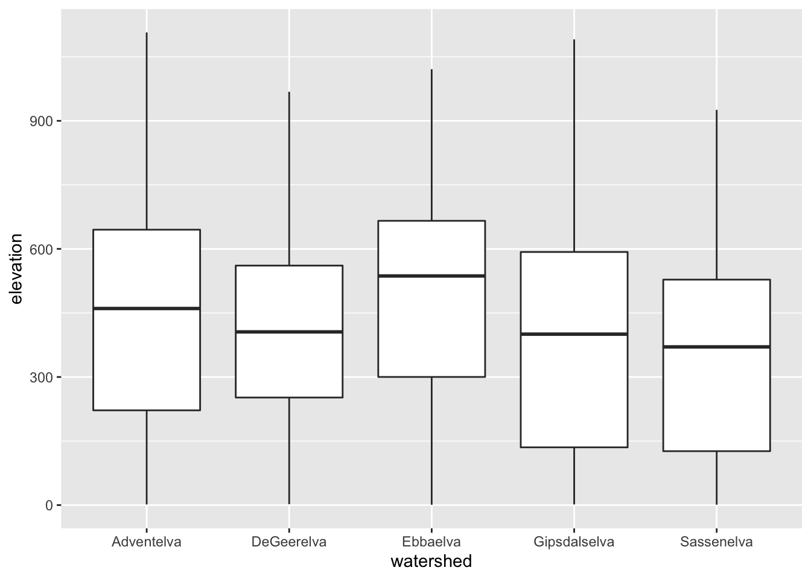
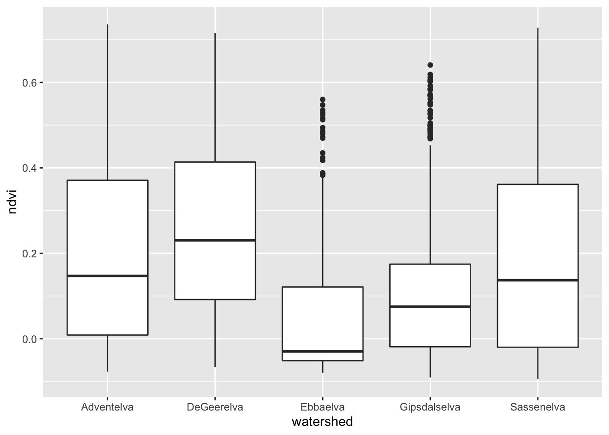
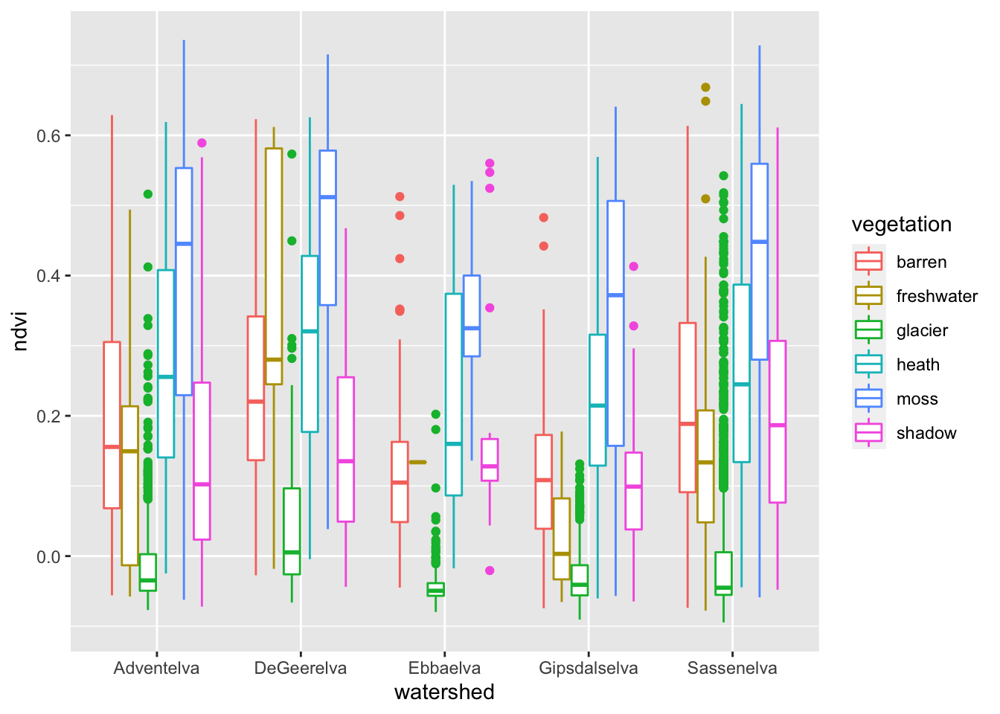
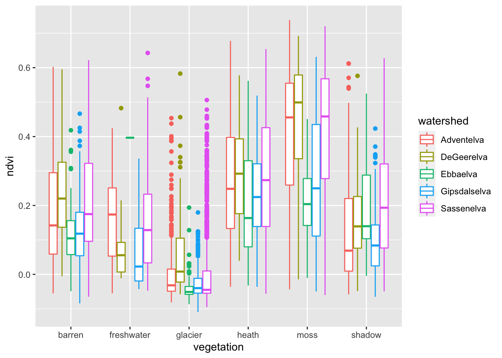
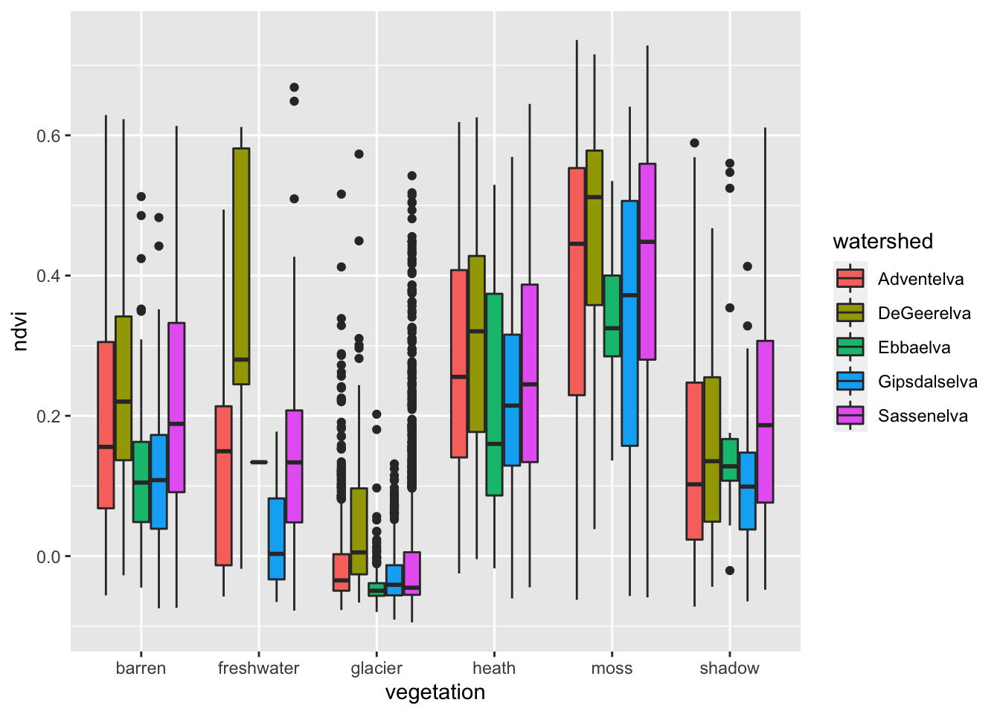
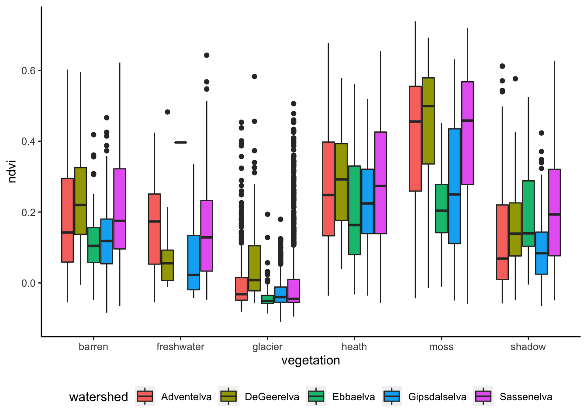
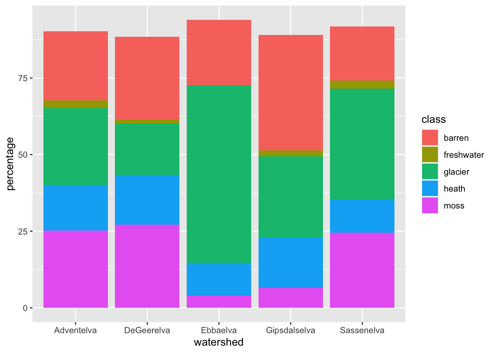
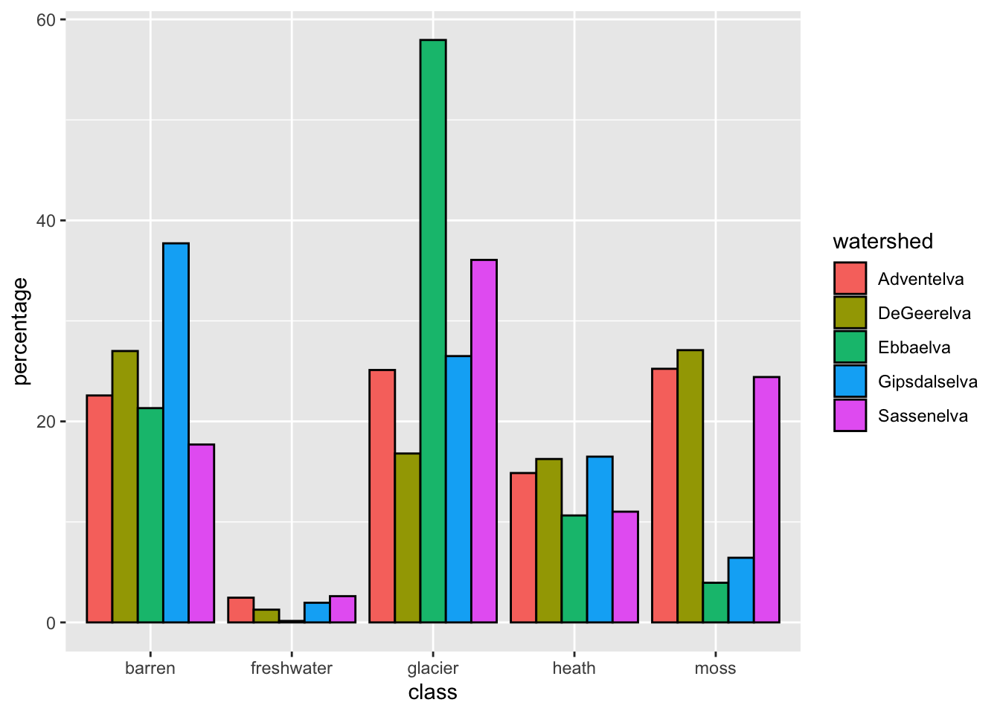
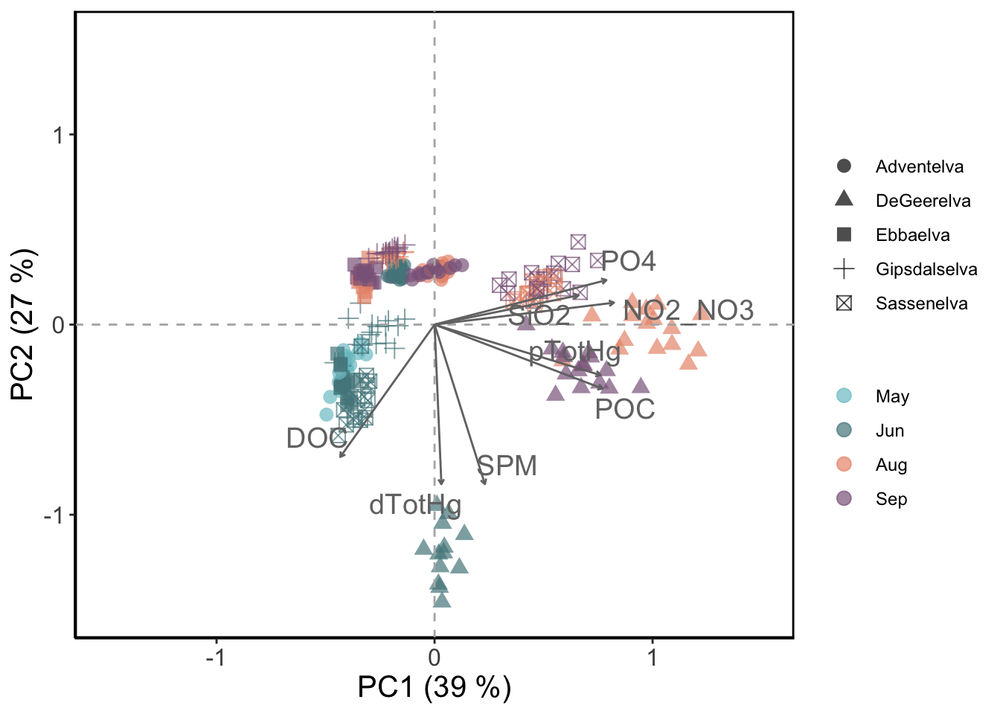

3 Watershed Comparison
Now, we will combine data on catchment characteristics and river water chemistry to investigate differences among the 5 study catchments.
3.1 Exploring the watershed dataframe
3.1.1 Preparing the data
# ggplots
# Load the watershed files
watershed_df <- read_csv("datafiles/spatial_data/watershed_dataframe.csv")
watershed_info <- read_csv("datafiles/spatial_data/watershed_info.csv")
# We add a column to watershed_df because it makes summaries easier
watershed_df$count<-1
#If your computer is slow, you can randomly subset the data
watershed_df_sub<-sample_n(watershed_df, 10000)3.1.2 Plotting the data in GGPLOT2
ggplot()+
geom_boxplot(data = watershed_df_sub, aes(x=watershed, y = elevation))
ggplot()+
geom_boxplot(data = watershed_df_sub, aes(x=watershed, y = ndvi))
ggplot()+
geom_boxplot(data = watershed_df_sub, aes(x=watershed, y = ndvi, color=vegetation))
ggplot()+
geom_boxplot(data = watershed_df_sub, aes(x=vegetation, y = ndvi, color=watershed))
ggplot()+
geom_boxplot(data = watershed_df_sub, aes(x=vegetation, y = ndvi, fill=watershed))
ggplot()+
geom_boxplot(data = watershed_df_sub, aes(x=vegetation, y = ndvi, fill=watershed))+
theme(strip.background = element_rect(colour="black", fill="white",
size=.5, linetype="solid"))+
theme(panel.grid.major = element_blank(), panel.grid.minor = element_blank(),
panel.background = element_blank(), axis.line = element_line(colour = "black"), legend.position="bottom")
3.2 Summarizing the watersheds dataframe
3.2.1 Summarizing the continious variables
#Calculate the mean ndvi, elevation and slope for each catchment
watershed_mean<-watershed_df %>%
group_by(watershed) %>%
summarise_at(c("ndvi", "elevation", "slope"), mean, na.rm = TRUE)
#Calculate the mean ndvi, elevation and slope for each catchment within 1km
watershed_mean<-watershed_df %>%
filter(station_distance < 1000) %>%
group_by(watershed) %>%
summarise_at(c(ndvi_1km="ndvi", elevation_1km="elevation", slope_1km="slope"), mean, na.rm = TRUE) %>%
inner_join(watershed_mean)
#Calculate the mean ndvi, elevation and slope for each catchment within 5km
watershed_mean<-watershed_df %>%
filter(station_distance < 5000) %>%
group_by(watershed) %>%
summarise_at(c(ndvi_5km="ndvi", elevation_5km="elevation", slope_5km="slope"), mean, na.rm = TRUE) %>%
inner_join(watershed_mean)3.2.2 Summarizing the ground cover classes
#Count each ground cover class for each watershed and pivot the table
watershed_class_proportion<-watershed_df %>%
group_by(watershed, vegetation) %>%
summarise_at(c("count"), sum, na.rm = TRUE) %>%
pivot_wider(
names_from = 'vegetation',
values_from = 'count')
#Calculate the percentages per vegetation class and watershed
watershed_class_proportion<-watershed_class_proportion %>% mutate(total = sum(c_across(where(is.numeric)), na.rm = TRUE)) %>%
ungroup() %>%
mutate(across(where(is.numeric), ~ . / total*100))
#Drop the columns that we don't need
watershed_class_proportion<-watershed_class_proportion %>% dplyr::select(-shadow, -marine, -total)3.2.3 Exploring the ground cover classes
#Change to long format for ground cover classes to be factors
watershed_class_proportion_pivot<-pivot_longer(watershed_class_proportion,
cols = -watershed,
names_to = 'class',
values_to = 'percentage')
#Plot the data with GGPLOT
ggplot(data=watershed_class_proportion_pivot, aes(x=watershed, y=percentage, fill=class)) +
geom_bar(stat="identity")
#Change the axis and from stacked to parallel
ggplot(data=watershed_class_proportion_pivot, aes(x=class, y=percentage, fill=watershed)) +
geom_bar(stat="identity", color="black", position=position_dodge())
3.2.4 Calculate the percentage bare ground within 50m of the river
#Sum the vegetation classes per watershed
buffer50_class_proportion<-watershed_df %>%
filter(river_buffer50 == "1") %>%
group_by(watershed, vegetation) %>%
summarise_at(c("count"), sum, na.rm = TRUE) %>%
pivot_wider(
names_from = 'vegetation',
values_from = 'count')
#Calculate the percentages per vegetation class and watershed
buffer50_class_proportion<-buffer50_class_proportion %>% mutate(total = sum(c_across(where(is.numeric)), na.rm = TRUE)) %>%
ungroup() %>%
mutate(across(where(is.numeric), ~ . / total*100))
#Drop the columns that we don't need and join with existing dataset
buffer50_bareground<-buffer50_class_proportion %>% dplyr::select(watershed, barren50meter=barren) %>%
inner_join(watershed_class_proportion)3.2.5 Join tables and export
#Use join to join the continious and categorical data into 1
watershed_info_joined <- inner_join(watershed_class_proportion, watershed_mean)
watershed_info_joined <- inner_join(watershed_info_joined, buffer50_bareground)
watershed_info_joined <- inner_join(watershed_info_joined, watershed_info)
write_csv(watershed_info_joined, "datafiles/spatial_data/watershed_info_joined.csv")3.3 Relationships to river water chemistry
3.3.1 PCA
# PCA of water chemistry
water_chem2 <- water_chem %>% drop_na() %>%
rename("DOC" = "DOC_mg_L",
"POC" = "POC_mg_L",
"NO2_NO3" = "NO2_NO3_umol_L",
"PO4" = "PO4_umol_L",
"SiO2" = "SiO2_umol_L",
"SPM" = "SPM_mg_L",
"dTotHg" = "dTotHg_ng_L",
"pTotHg" = "pTotHg_ng_L")
Envar <- water_chem2 %>%
select(c(DOC, POC, NO2_NO3, PO4, SiO2, SPM, dTotHg, pTotHg)) %>%
mutate_at(vars(c(DOC, POC, NO2_NO3, PO4, SiO2, SPM, dTotHg, pTotHg)),~scale(.))
# PCA in Vegan
water_chem_PCA <- rda(Envar)
water_chem_PCACall: rda(X = Envar)
Inertia Rank
Total 8
Unconstrained 8 8
Inertia is variance
Eigenvalues for unconstrained axes:
PC1 PC2 PC3 PC4 PC5 PC6 PC7 PC8
3.1505 2.1688 1.1928 0.5890 0.4575 0.2103 0.1660 0.0651 (3.1505/8)*100[1] 39.38125(2.1688/8)*100[1] 27.11# Plot
PCAscores <- scores(water_chem_PCA, display = "sites") %>% as.data.frame()
PCAvect <- scores(water_chem_PCA, display = "species") %>% as.data.frame() %>% rownames_to_column("species")
#Plot
P4 <- ggplot() +
geom_point(data = PCAscores, aes(x = PC1, y = PC2, color = water_chem$month),
size= 3, alpha = 0.7) +
scale_color_manual(values=c("cadetblue3", "cadetblue4", "darksalmon", "plum4")) +
theme_classic() +
geom_vline(xintercept = c(0), color = "grey70", linetype = 2) +
geom_hline(yintercept = c(0), color = "grey70", linetype = 2) +
labs(x = "PC1 (39 %)", y = "PC2 (27%)") +
geom_segment(data = PCAvect, aes(x = 0, xend = PC1, y = 0, yend = PC2),
arrow = arrow(length = unit(0.1, "cm")), col = "black") +
geom_text_repel(data = PCAvect, aes(x = PC1, y= PC2, label = species), parse = T, col="black", size = 3, segment.size = 0.15) +
theme(text = element_text(size=),legend.text = element_text(size=rel(0.6)),legend.title = element_blank(),
panel.background = element_rect(colour = "black", size=1)) + ylim(-1.2,1.2) + xlim(-1.5,1.5)
P4
3.3.2 RDA
# PCA of water chemistry
water_chem <- water_chem %>% drop_na() %>%
rename("DOC" = "DOC_mg_L",
"POC" = "POC_mg_L",
"NO2_NO3" = "NO2_NO3_umol_L",
"PO4" = "PO4_umol_L",
"SiO2" = "SiO2_umol_L",
"SPM" = "SPM_mg_L",
"dTotHg" = "dTotHg_ng_L",
"pTotHg" = "pTotHg_ng_L")
Envar <- water_chem %>%
select(c(DOC, POC, NO2_NO3, PO4, SiO2, SPM, dTotHg, pTotHg)) %>%
mutate_at(vars(c(DOC, POC, NO2_NO3, PO4, SiO2, SPM, dTotHg, pTotHg)),~scale(.))
# PCA in Vegan
water_chem_PCA <- rda(Envar)
water_chem_PCACall: rda(X = Envar)
Inertia Rank
Total 8
Unconstrained 8 8
Inertia is variance
Eigenvalues for unconstrained axes:
PC1 PC2 PC3 PC4 PC5 PC6 PC7 PC8
3.1505 2.1688 1.1928 0.5890 0.4575 0.2103 0.1660 0.0651 (3.1505/8)*100[1] 39.38125(2.1688/8)*100[1] 27.11# Plot
PCAscores <- scores(water_chem_PCA, display = "sites") %>% as.data.frame()
PCAvect <- scores(water_chem_PCA, display = "species") %>% as.data.frame() %>% rownames_to_column("species")
#Plot
P4 <- ggplot() +
geom_point(data = PCAscores, aes(x = PC1, y = PC2, color = water_chem$month),
size= 3, alpha = 0.7) +
scale_color_manual(values=c("cadetblue3", "cadetblue4", "darksalmon", "plum4")) +
theme_classic() +
geom_vline(xintercept = c(0), color = "grey70", linetype = 2) +
geom_hline(yintercept = c(0), color = "grey70", linetype = 2) +
labs(x = "PC1 (39 %)", y = "PC2 (27%)") +
geom_segment(data = PCAvect, aes(x = 0, xend = PC1, y = 0, yend = PC2),
arrow = arrow(length = unit(0.1, "cm")), col = "black") +
geom_text_repel(data = PCAvect, aes(x = PC1, y= PC2, label = species), parse = T, col="black", size = 3, segment.size = 0.15) +
theme(text = element_text(size=),legend.text = element_text(size=rel(0.6)),legend.title = element_blank(),
panel.background = element_rect(colour = "black", size=1)) + ylim(-1.2,1.2) + xlim(-1.5,1.5)
P4
Note
In Arctic regions, most river runoff is constrained to the summer melt season due to seasonal variations in sunlight and temperature. Despite their importance, for simplification, we do not account for seasonal variability in river discharge and water chemistry in this example.